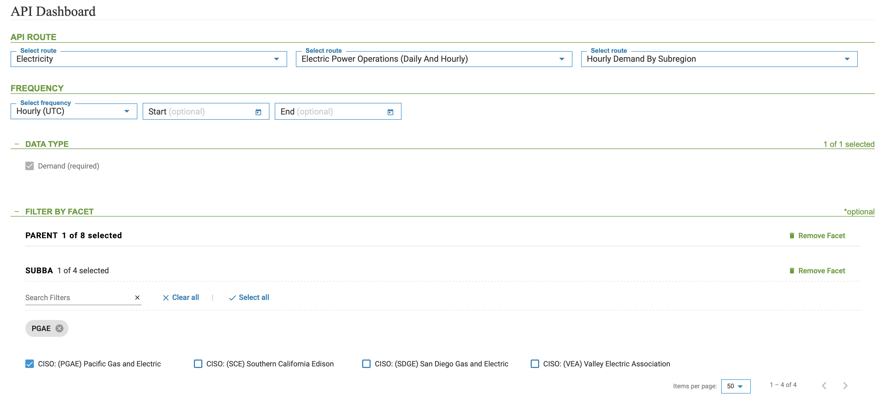
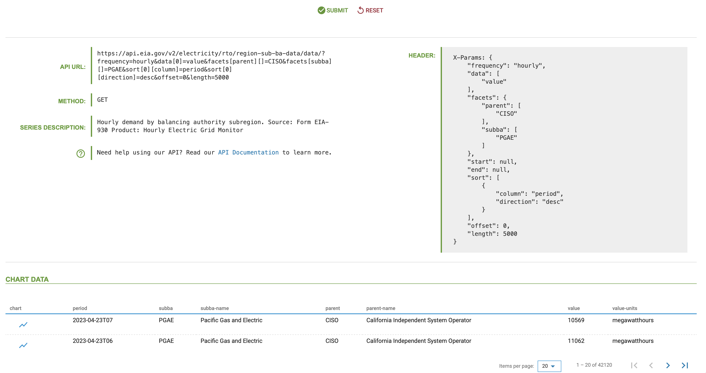

The U.S. Energy Information Administration (EIA) hosts a variety of time series data describing the U.S. energy sector. The EIA data is open and accessible through an Application Programming Interface (API) for free. The EIAapi package provides functions to query and pull tidy data from the EIA API v2.
To pull data from the API using this package, you will need the following:
To register to the API, go to https://www.eia.gov/opendata/, click the
Register button, and follow the instructions (see the
screenshot below).
The EIAapi package provides the following functions:
eia_metadata - Returns information and metadata from
the API about the available categories and subcategories (routes)eia_get - Enables query data from the APIA good place to start exploring the available categories and
subcategories of the API is on the API Dashboard. For
example, let’s explore the hourly demand for electricity in the
California sub-region in the dashboard and use the metadata to set the
query parameters. Let’s start by set the API Route to
Electricity ->
Electric Power Operrations (Daily And Hourly) ->
Hourly Demand Subregion, as shown in the screenshot below.
Once the data route is set, define the PARENT facet as
CISO. This will filter the options in the next facet -
SUBBA to the four operators in California. Let’s select
CISO: (PGAE) Pacific Gas and Electric and save the
selection:

Once finalize the routes,facets, and any other filters, you can submit the query and you should receive the API metadata. For the selection above, here is the expected respond:

Let’s look at the returned metadata above and use it to set the query
to pull the data, starting with the API URL:
https://api.eia.gov/v2/electricity/rto/region-sub-ba-data/data/?frequency=hourly&data[0]=value&facets[parent][]=CISO&facets[subba][]=PGAE&sort[0][column]=period&sort[0][direction]=desc&offset=0&length=5000The URL contains the following components:
https://api.eia.gov/v2/
rto/region-sub-ba-data/data/
?frequency=hourly&data[0]=value&facets[parent][]=CISO&facets[subba][]=PGAE&sort[0][column]=period&sort[0][direction]=desc&offset=0&length=5000
We will use the data path to set the api_path. To set
the query parameters, you can use the embedded query in the URL by
extracting the values of the different filters (frequency, facet, etc.)
or use the query header on the right side:
X-Params: {
"frequency": "hourly",
"data": [
"value"
],
"facets": {
"parent": [
"CISO"
],
"subba": [
"PGAE"
]
},
"start": null,
"end": null,
"sort": [
{
"column": "period",
"direction": "desc"
}
],
"offset": 0,
"length": 5000
}We can now set the query by defining the frequency,
data, and facets arguments as defined in the
header above:
library(EIAapi)
df1 <- eia_get(api_key = Sys.getenv("eia_key"),
api_path = "electricity/rto/region-sub-ba-data/data/",
frequency = "hourly",
data = "value",
facets = list(parent = "CISO",
subba = "PGAE"),
offset = 0,
length = 5000)
head(df1)
#> period subba subba-name parent
#> 1 2019-09-02T07 PGAE Pacific Gas and Electric CISO
#> 2 2019-09-01T11 PGAE Pacific Gas and Electric CISO
#> 3 2019-09-01T10 PGAE Pacific Gas and Electric CISO
#> 4 2019-09-02T04 PGAE Pacific Gas and Electric CISO
#> 5 2019-09-01T21 PGAE Pacific Gas and Electric CISO
#> 6 2019-09-02T05 PGAE Pacific Gas and Electric CISO
#> parent-name value value-units
#> 1 California Independent System Operator 12431 megawatthours
#> 2 California Independent System Operator 10270 megawatthours
#> 3 California Independent System Operator 10620 megawatthours
#> 4 California Independent System Operator 15685 megawatthours
#> 5 California Independent System Operator 12945 megawatthours
#> 6 California Independent System Operator 14750 megawatthours
unique(df1$parent)
#> [1] "CISO"
unique(df1$subba)
#> [1] "PGAE"Note: The API limit the number of observations per a
call to 5000. If you wish to pull more than 5000 observations you can
iterate your call and set the start and end
arguments as a rolling window function. Similarly, you can use the
length and offset arguments to define the
rolling function.
The EIA API provides detailed information and metadata about the categories and time series available in the API. This enables extracting information programmatically about different data parameters. The eia_metadata enables query metadata from the API. The function has two arguments:
api_path - the API category/route path following the
API endpoint (i.e., https://api.eia.gov/v2/)api_key - the API keyQuerying metadata is done by sending a request with a specific route
path, and the API, in response, returns the available sub-categories
under that path. For example, setting the api_path argument
empty or NULL returns a list with the API main
categories:
main_route <- eia_metadata(api_path = "",
api_key = Sys.getenv("eia_key"))
main_route$routes[, c("id", "name")]
#> id name
#> 1 coal Coal
#> 2 crude-oil-imports Crude Oil Imports
#> 3 electricity Electricity
#> 4 international International
#> 5 natural-gas Natural Gas
#> 6 nuclear-outages Nuclear Outages
#> 7 petroleum Petroleum
#> 8 seds State Energy Data System (SEDS)
#> 9 steo Short Term Energy Outlook
#> 10 densified-biomass Densified Biomass
#> 11 total-energy Total Energy
#> 12 aeo Annual Energy Outlook
#> 13 ieo International Energy Outlook
#> 14 co2-emissions State CO2 EmissionsSimilarly, we can continue and extract the sub-categories under the
electricity category by setting the api_path argument to
electricity:
main_route <- eia_metadata(api_path = "electricity",
api_key = Sys.getenv("eia_key"))
main_route$routes[, c("id", "name")]
#> id
#> 1 retail-sales
#> 2 electric-power-operational-data
#> 3 rto
#> 4 state-electricity-profiles
#> 5 operating-generator-capacity
#> 6 facility-fuel
#> name
#> 1 Electricity Sales to Ultimate Customers
#> 2 Electric Power Operations (Annual and Monthly)
#> 3 Electric Power Operations (Daily and Hourly)
#> 4 State Specific Data
#> 5 Inventory of Operable Generators
#> 6 Electric Power Operations for Individual Power Plants (Annual and Monthly)Note: the number of sub-categories or routes varies between the different categories.
The last route in the API path defines the series available under those categories. For example, we used the above to pull the hourly demand for electricity by sub-region the following URL:
https://api.eia.gov/v2/electricity/rto/region-sub-ba-data/data/?frequency=hourly&data[0]=value&facets[parent][]=CISO&facets[subba][]=PGAE&sort[0][column]=period&sort[0][direction]=desc&offset=0&length=5000In this case, the path is defined as -
electricity/rto/region-sub-ba-data/, where:
electricity is the main categoryrto - is the sub-category under electricity
representing the Electric Power Operations (Daily and Hourly), andregion-sub-ba-data - is the last sub-category in this
route, representing the Hourly Demand by Sub-regionYou can notice that the last sub-category in this path -
region-sub-ba-data ended with data to indicate
to the user that this is the last route, and under it there is data. The
metadata for the time series has a different structure with respect to
the category metadata. It provides useful information such as: -
Starting and ending time of the series - Available facets - Series
Frequency
For example, let’s query for Demand by Sub-region metadata:
elec_sub_route <- eia_metadata(api_path = "electricity/rto/region-sub-ba-data/",
api_key = Sys.getenv("eia_key"))
elec_sub_route
#> $id
#> [1] "region-sub-ba-data"
#>
#> $name
#> [1] "Hourly Demand by Subregion"
#>
#> $description
#> [1] "Hourly demand by balancing authority subregion. \n Source: Form EIA-930\n Product: Hourly Electric Grid Monitor"
#>
#> $frequency
#> id alias
#> 1 hourly hourly (UTC)
#> 2 local-hourly hourly (Local Time Zone)
#> description query format
#> 1 One data point for each hour in UTC time. H YYYY-MM-DD"T"HH24
#> 2 One data point for each hour in local time. LH YYYY-MM-DD"T"HH24TZH
#>
#> $facets
#> id description
#> 1 subba Subregion
#> 2 parent Balancing Authority
#>
#> $data
#> $data$value
#> $data$value$`aggregation-method`
#> [1] "SUM"
#>
#> $data$value$alias
#> [1] "Demand"
#>
#> $data$value$units
#> [1] "megawatthours"
#>
#>
#>
#> $startPeriod
#> [1] "2018-06-19T05"
#>
#> $endPeriod
#> [1] "2023-04-29T07"
#>
#> $defaultDateFormat
#> [1] "YYYY-MM-DD\"T\"HH24"
#>
#> $defaultFrequency
#> [1] "hourly"
#>
#> $command
#> [1] "/v2/electricity/rto/region-sub-ba-data/"
#>
#> attr(,"class")
#> [1] "list" "eia_metadata"You can continue and query additional information on this series. For
example, let’s extract the list of balancing authorities that are
available for this series under the parent facet:
eia_metadata(api_path = "electricity/rto/region-sub-ba-data/facet/parent",
api_key = Sys.getenv("eia_key"))
#> $totalFacets
#> [1] 8
#>
#> $facets
#> id name
#> 1 SWPP Southwest Power Pool
#> 2 NYIS New York Independent System Operator
#> 3 ISNE ISO New England
#> 4 MISO Midcontinent Independent System Operator, Inc.
#> 5 ERCO Electric Reliability Council of Texas, Inc.
#> 6 CISO California Independent System Operator
#> 7 PNM Public Service Company of New Mexico
#> 8 PJM PJM Interconnection, LLC
#> alias
#> 1 (SWPP) Southwest Power Pool
#> 2 (NYIS) New York Independent System Operator
#> 3 (ISNE) ISO New England
#> 4 (MISO) Midcontinent Independent System Operator, Inc.
#> 5 (ERCO) Electric Reliability Council of Texas, Inc.
#> 6 (CISO) California Independent System Operator
#> 7 (PNM) Public Service Company of New Mexico
#> 8 (PJM) PJM Interconnection, LLC
#>
#> $command
#> [1] "/v2/electricity/rto/region-sub-ba-data/facet/parent/"
#>
#> attr(,"class")
#> [1] "list" "eia_metadata"